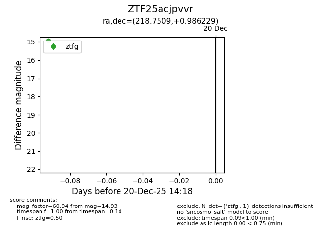
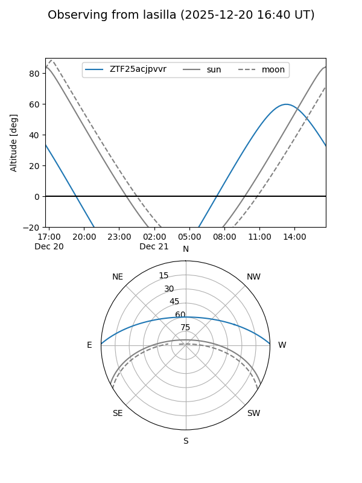
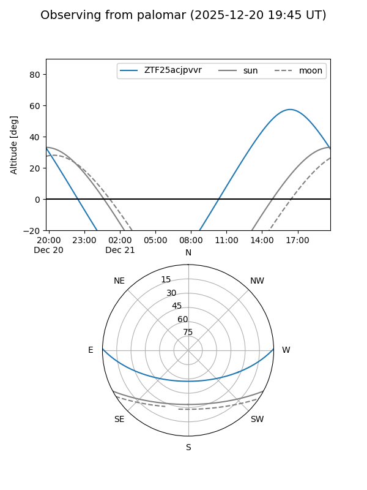

ZTF25acjpvvr
Target ZTF25acjpvvr at 2025-12-20 14:19
Aliases and brokers:
FINK: fink-portal.org/ZTF25acjpvvr
Lasair: lasair-ztf.lsst.ac.uk/objects/ZTF25acjpvvr
ALeRCE: alerce.online/object/ZTF25acjpvvr
alt names
ZTF25acjpvvr (ztf,fink_ztf)
Coordinates:
equatorial (ra, dec) = 218.7509,+0.98623
equatorial (HMS+DMS) = 14:35:00.21,+00:59:10.43
galactic (l, b) = (350.8078,+53.93833)
Flags:
Photometry:
last ztfg=14.93
1 ztfg detections
Lightcurve

Visibility


Additional plots